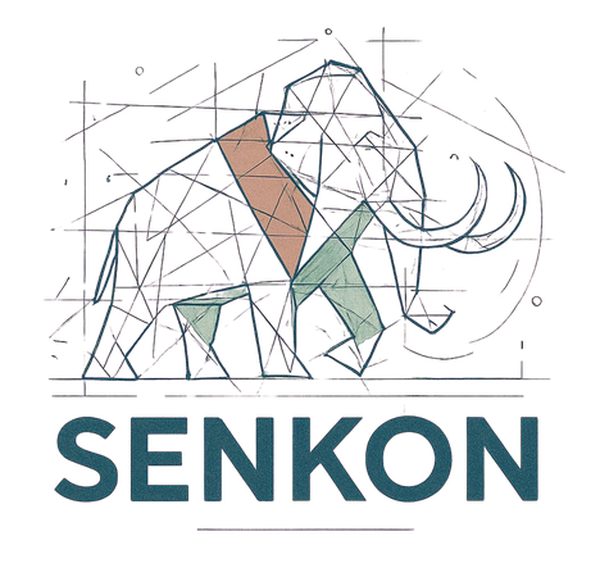

Havalimanı
Antalya Havalimanı yeni terminal
Statik tasarım · 10.000 m² · Antalya

Senkon Mühendislik İletişimSenkon Mühendislik · İstanbul
Deprem performans değerlendirmesi, teknik raporlama ve konsept aşamasında telefonda açılan 3B ön tasarım modelleri. Süleyman Fırat Şentürk, İnşaat Yüksek Mühendisi.

Hizmetler
Endüstriyel yapılar, laboratuvar ve ofis binaları, çatı ve platformlar.
TS 500 ve TBDY 2018'e göre taşıyıcı sistem tasarımı.
Mevcut yapılar için TBDY 2018 kapsamında inceleme ve güçlendirme projeleri.
Statik rapor, güçlendirme önerileri, ikinci görüş.
Konsept aşamasında, telefonda açılan paylaşılabilir modeller.
Seçilmiş projeler
Statik tasarım · 10.000 m² · Antalya
Kule ve ikincil yapılar · 12.000 m² · Ankara
Endüstriyel tesis tasarımı · 200.000 m² · İstanbul
Taşıyıcı sistem tasarımı · 54.000 m² · Taşkent
Yüksek katlı konut ve ofis · 27.000 m² · İstanbul
TBDY 2018 performans değerlendirmesi · 25.000 m² · İstanbul
GVN Tasarım ve Mühendislik ile Yapı Akademisi Mühendislik bünyesinde görev aldığım projelerden.
Hakkında
Yazılımlar
StructKit
Kurulum gerektirmeyen, telefonda da çalışan hesap araçları. Çelik, betonarme, deprem ve rüzgar.
3B model görüntüleyici
Konsept aşamasındaki modeller telefonda açılan bir bağlantıyla paylaşılır. Bağlantıyı veya 12 haneli model kodunu buraya yapıştırın.
Modeller yalnızca bağlantıyı alan kişilerce görüntülenir; herkese açık bir liste yoktur.
İletişim